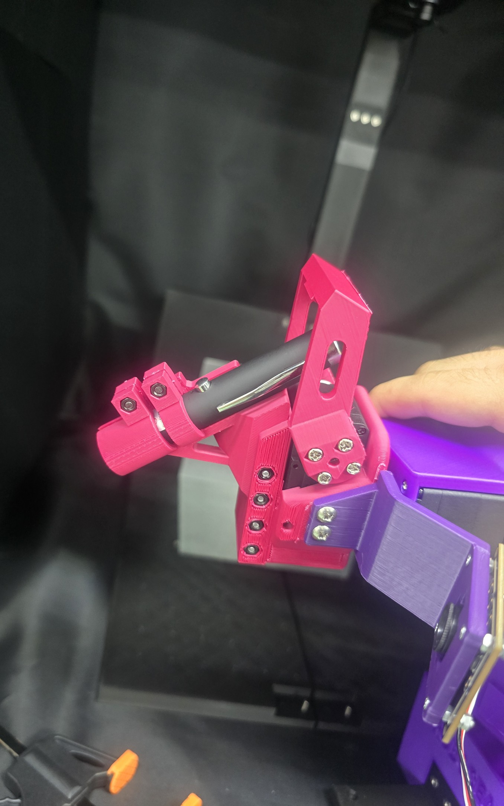
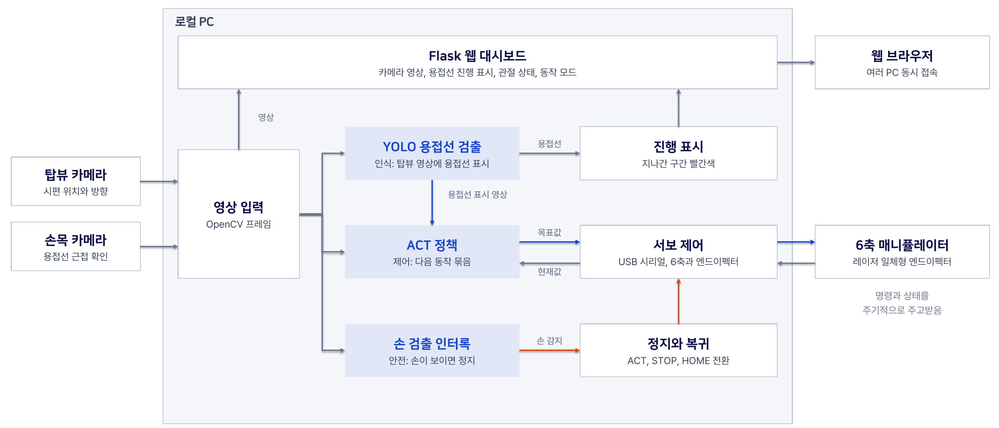
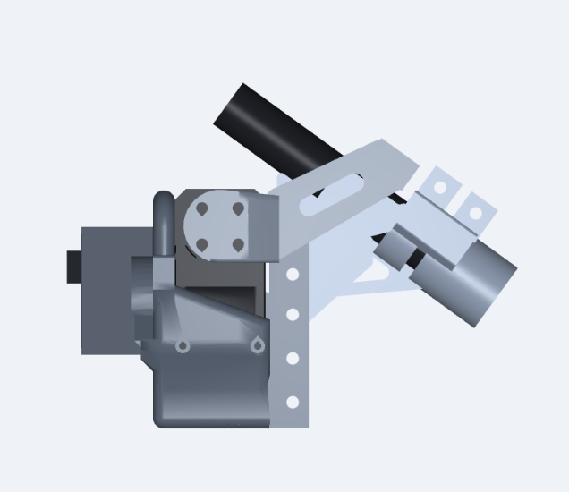
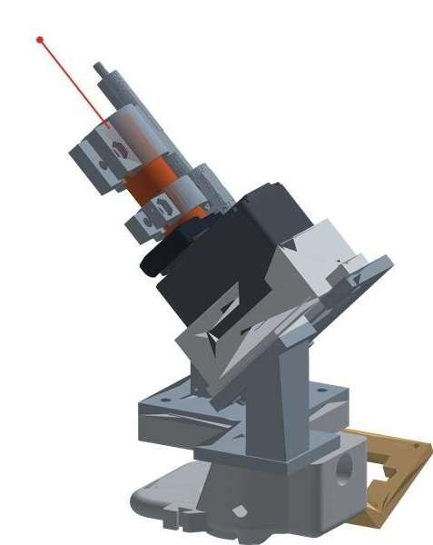

01무엇을 만들었나

숙련 용접공의 고령화로 기술이 끊길 우려가 있고, 기존 교시 기반 자동용접은 작업물 위치가 매번 바뀌는 건설현장에 쓰기 어렵습니다. 그래서 숙련자가 리더암으로 시연한 동작을 ACT 모방학습으로 배워, 임의로 놓인 시편을 스스로 용접하는 로봇을 만들었습니다.
실제 아크 대신 레이저 포인터로 토치 끝 위치를 보여 주는 가상 용접으로 검증했습니다. 이번 범위는 수평(X, Y 방향) 접합선입니다.
자율 작업 순서
- 시편 배치: 작업자가 시편을 임의 위치와 방향에 놓음
- 시편 인식: 카메라로 시편과 용접선을 인식
- 시작점 접근: 용접 시작점으로 로봇 이동
- 토치 거리 확보: 토치와 용접부 거리 20mm
- 레이저 ON: 시작점에서 레이저를 켬
- 용접선 추종: X, Y 방향 접합선을 따라감
- 작업 종료: 레이저 OFF 후 원위치 복귀
02시스템 구성

- 카메라 2대(상단, 손목) 영상이 USB로 로컬 PC에 들어옵니다.
- ACT 정책이 영상과 현재 관절 위치 q를 받아 다음 목표 관절값 q*를 냅니다.
- 서보 제어부가 USB 시리얼(TTL)로 명령을 보내고 현재 위치를 다시 읽습니다.
- 작업 영역에서 손이 검출되면 정지하고, 손이 빠진 뒤 복귀를 허용합니다.
- Flask 웹 서비스로 여러 PC의 브라우저에서 영상과 상태를 봅니다.
03하드웨어와 부품
| 구성 | 내용 |
|---|---|
| 매니퓰레이터 | 부품을 STL로 직접 설계해 3D 프린팅으로 만든 자체 제작 7축. 관절 6개와 그리퍼, 모터 7개. 리더암과 팔로워암 한 쌍 |
| 서보 | Feetech STS3215, USB 시리얼 연결 |
| 엔드이펙터 | 펜형 레이저 포인터 일체형, 3D 프린팅. 본체, 집게, 브래킷 3개 부품 |
| 레이저 ON/OFF | 그리퍼 채널 서보의 집게가 레이저 버튼을 직접 누름 |
| 카메라 | 2대. 상단(시편 위치와 방향), 손목(용접선 근접 확인) |
| 시편 | 3D 프린팅 T자 필릿 2종(길이 181mm, 길이 204mm 두꺼운 판) |
엔드이펙터 출력 파일

세 부품이 출력판에 배치된 Bambu Studio 프로젝트 파일 하나로 내려받을 수 있습니다.
01_body_print.3mf 내려받기 (약 290KB)
| 부품 | 역할 |
|---|---|
| 01_body | 손목에 붙는 본체. 그리퍼 서보 자리 |
| 02_jaw | 서보에 달려 레이저 버튼을 누르는 집게 |
| 03_bracket_v6 | 레이저 포인터를 잡아 주는 브래킷 |
04엔드이펙터 개선 과정

처음에는 OPTi3 용접 토치를 1/3로 줄인 모형에 레이저와 서보를 붙였습니다. 이 형태가 작업판에 계속 부딪혀, 아래 순서로 고치다가 결국 다시 설계했습니다.
- 토치가 판에 닿음: 와이어 돌출 21mm를 5mm로 줄여 토치 16mm 단축
- 레이저가 판에 먼저 닿음: 레이저 묶음을 15mm 뒤로 물림. 부품 높이 117.0mm에서 101.3mm
- 그래도 충돌: 토치 머리의 서보가 커서 어느 쪽에 두어도 판에 닿을 위험이 남음
- 최종 재설계: 토치를 없애고 레이저 포인터 자체를 토치 대신 쓰는 일체형으로 변경. 본체, 집게, 브래킷 3개 부품
원인, 조치, 검증, 남은 일까지 적은 전체 기록은 트러블슈팅 기록에 있습니다.
05데이터 수집과 학습
| 단계 | 내용 |
|---|---|
| 시연 | 숙련자가 리더암을 잡고 움직이면 팔로워암이 실시간으로 같은 동작을 함 |
| 기록 | 카메라 2대 영상, 관절 7개 값(레이저 ON/OFF 채널 포함)을 시간에 맞춰 함께 저장 |
| 학습 | ACT 정책. 영상과 관절 상태를 보고 다음 동작을 묶음(action chunk)으로 예측 |
| 실행 | 리더암 없이 정책이 팔로워 7축을 직접 움직이며 추종과 레이저 ON/OFF를 함께 수행 |
따라 할 때 알아 둘 점
7축 설정: 학습 도구의 기본 로봇 설정은 모터 6개 기준이라, 관절 6개와 그리퍼로 된 7축 설정(모터 7개 읽기, 캘리브레이션, 리더와 팔로워 짝 맞추기)을 직접 추가했습니다.
레이저를 학습 신호로: 데이터셋의 동작(action)에는 리더 쪽 값이 저장됩니다. 그래서 리더 손잡이 값이 그대로 레이저 채널이 되게 했습니다. 팔로워 쪽은 60에서 켜고 40에서 꺼서 경계값 근처의 깜빡임을 막습니다.
시연 규칙: 레이저가 꺼져 있으면 점이 보이지 않아 "점이 용접선에 닿으면 켠다"는 규칙은 따를 수 없습니다. 기준을 토치 위치로 바꿔, 토치가 시작점 위 20mm에 오면 손잡이를 닫고 끝점에서 엽니다.
배치 다양화: 시편 위치와 방향을 바꿔 가며 시연해야 배치가 달라져도 대응합니다. 카메라는 회전하지 않는 받침에 고정해, 학습과 실행 때 시점이 같게 합니다.
06성공 판정 기준
한 번의 시도는 아래 8개 항목을 모두 통과해야 성공으로 봅니다. 판정 수치는 팀 협의용 제안값입니다.
| No | 평가 항목 | 판정 기준(안) | 기록 데이터 |
|---|---|---|---|
| 1 | 시편 인식 | 시편 위치와 방향 인식 성공 | 인식 결과 |
| 2 | 시작점 접근 | 시작점 위치 오차 5mm 이하 | 시작점 위치 오차 |
| 3 | 토치 거리 유지 | TCP와 용접부 거리 20±3mm | 거리 오차 |
| 4 | 레이저 ON | 시작점에서 레이저 ON | ON 시점과 위치 |
| 5 | 용접선 추종 | 추종 경로 이탈 5mm 이하, 용접선의 90% 이상이 빨간색으로 바뀜 | 추종 위치 오차, 빨간색 비율 |
| 6 | 종료점 도달 | 종료점 위치 오차 5mm 이하 | 종료점 위치 오차 |
| 7 | 레이저 OFF | 종료점에서 레이저 OFF | OFF 시점과 위치 |
| 8 | 원위치 복귀 | 홈 위치 복귀 완료 | 전체 작업시간 |
빨간색으로 바뀌면 용접한 구간
YOLO가 화면에서 찾은 용접선은 처음에 파란색으로 표시됩니다. 레이저 점이 지나간 구간은 빨간색으로 바뀝니다.
시도가 끝났을 때 용접선 대부분(90% 이상)이 빨간색이면 용접선을 끝까지 따라간 것으로 보고, 5번 항목을 통과한 것으로 판정합니다. 남은 파란 구간은 레이저가 지나가지 않은, 즉 실제 용접이라면 비드가 빠졌을 구간입니다.
재는 방법: 토치(레이저 끝) 거리는 게이지 블록으로, 추종 오차와 시작점, 종료점 오차는 레이저 점 위치로, 레이저 ON/OFF는 카메라 영상으로 확인합니다.
07한계와 향후 과제
한계
- 3D 프린팅 시편과 정해진 작업환경에서만 검증해 일반화 성능 검증에 한계
- 레이저 기반 가상 용접이라 실제 용접 품질은 미검증
- 일반 RGB 카메라로는 높이 정보가 부족해 수직(Z 방향) 접합선은 제외
향후 과제
- 다양한 시편과 환경으로 학습 데이터 확대
- 실제 아크 용접 공정 검증
- 깊이 카메라나 카메라 배치 변경으로 수직 접합선까지 확장
08참고 자료
- ACT 원 논문: Zhao et al., "Learning Fine-Grained Bimanual Manipulation with Low-Cost Hardware", RSS 2023. arXiv:2304.13705